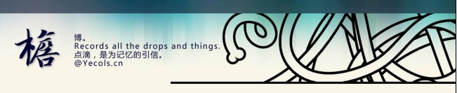

做这个站子的时候，是从顶上的菜单栏开始。决定用固定的菜单条，然后参考一个国外的网站对定下了配色方案。然后是做的portfolio页面，然后做这个博客的皮。再是留言本，再相片页，然后收尾。
决定一个自己满意的banner并不容易，檐字的字体倒是早敲定的，做上一版的博客皮肤时就在用，可惜字体库不全，只有一些常见字。如下的历史版本，曾一度想用单字的檐，其他空无。没有做出满意的banner是开始动工的日子一再拖延的主因。


这个皮肤从sandbox1.6开始美化。sandbox是一款为皮肤设计者提供的设计模板，它有完善的调用函数和空白的样式。因为前面“檐”的色调、布局、风格都已经定好并做出了portfolio。这里相应简单，只需把我的整站样式对应地设到博客的CSS就好了。
关键在于做侧边栏的两个效果花了点心思：一个是侧边栏与主栏的分割线两端的渐隐效果，一个是文章分类的那个悬停效果。
做portfolio页面的分栏时，因为侧边栏的项目数是确定的，所以分割线直接是一张效果图片。而在博客页，侧边栏的长短是根据内容自增减的，就不能用简单的一张图片设为背景来实现。其实后来的方法也简单，只是转了个弯：这样一条侧边栏的分割线分为三层，分到不同的三个div中作为其背景。最底层是y方向重复的单像素线条，第二层设定上半段的渐隐图片，并设为顶上对齐。第三层设定下半段渐隐，设为底部对齐。另外，为了确保第三层的图片在底部对齐时能确实在底部，写一段js将第三层的高度设为与底层的div高度相同。
if(document.getElementById(”content”).clientHeight document.getElementById(”content”).style.height=document.getElementById(”divMiddle”).offsetHeight+”px”;
}
第二处小技巧的地方是右边的catalog项的悬停效果。悬停时的按钮效果是一张半透明的png图片。刚开始的时候想的很简单：将里面的文字设为链接，写了a:hover的CSS，外面一层div把这个链接包起来，display属性设为inline-block。理论上如此是行得通的。在FF和Safari上测试也出了效果，可就是在IE不行。考虑后还是通过js来解决这个问题：在悬停时索性改变了它的css类。
if (document.all&&document.getElementById) {
navRoot = document.getElementById(”head_nav”);
for (i=0; i node = navRoot.childNodes[i];
node.onmouseover=function() {this.className+=” over”;}
node.onmouseout=function() {this.className=this.className.replace(” over”, “”);}
}
上线几天，发现bug还是很多。欸……其实后台也没有完善。仍需努力啊……
配色挺好的，有放出来吗？我用谷歌浏览器的时候发现footer只显示了一半。
[回复]
写的好辛苦 没人留- -我留下 我看过了……
[回复]
很简洁 我喜欢
[回复]
呃。算个bug，在FF中也是。现在已经修复。。。谢谢你的指正！
没有放出。呵呵，私用的，做的时候很多都是根据本站定制，比如侧边栏的很多都已写死。呵呵
[回复]
得你一已阅章。。不容易啊。。。呵呵~
[回复]
Casino 1243014606…
Casino 1243014606…